A modern public website, online bill pay, the office's billing system, a phone-friendly meter-reading app, and an AI assistant — one monthly price, live in days, no web developer required.
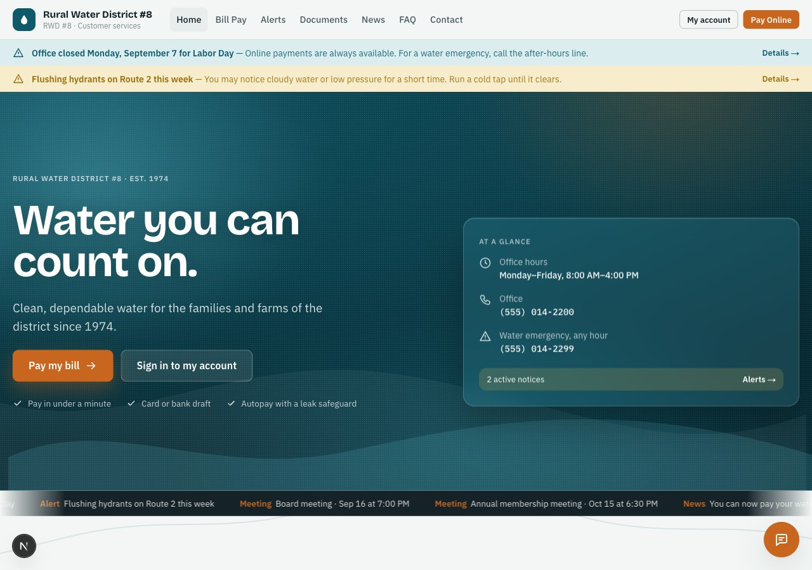
Most districts stitch this together from three vendors — a web person, a payment processor, and billing software from another decade. SEK Waterline is all of it, built as one thing.
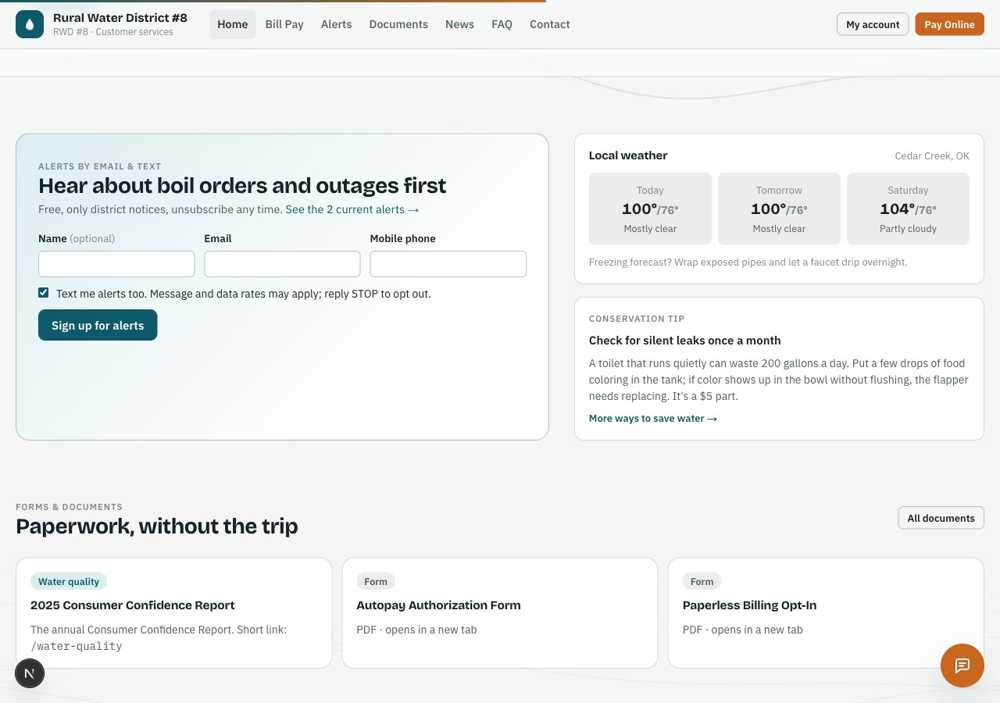
Hours, alerts, board meetings, documents, and the annual water-quality report at a permanent link — editable by office staff, readable on any phone.
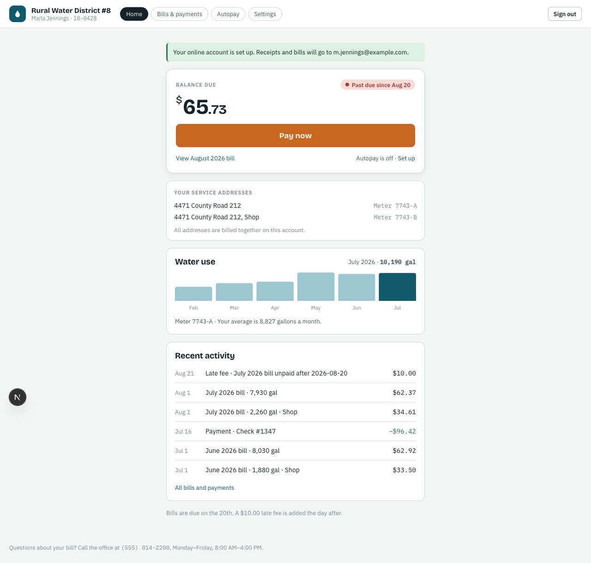
Residents register themselves from the paper bill, see balance and usage, pay by card or bank draft, and set up autopay — the district never touches a card number.
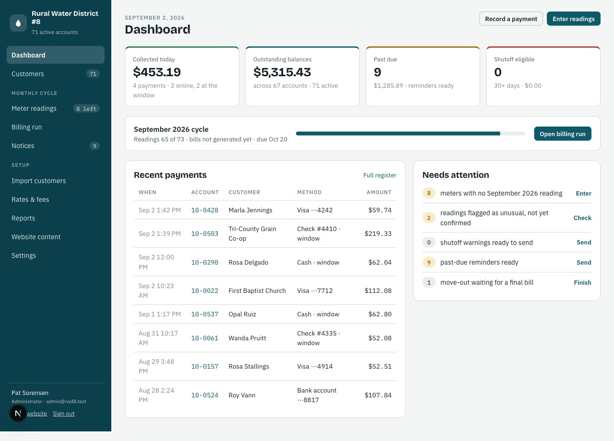
Customers, ledgers, meter readings, rates, billing runs, notices, and reports — not a payment link bolted onto a brochure site.
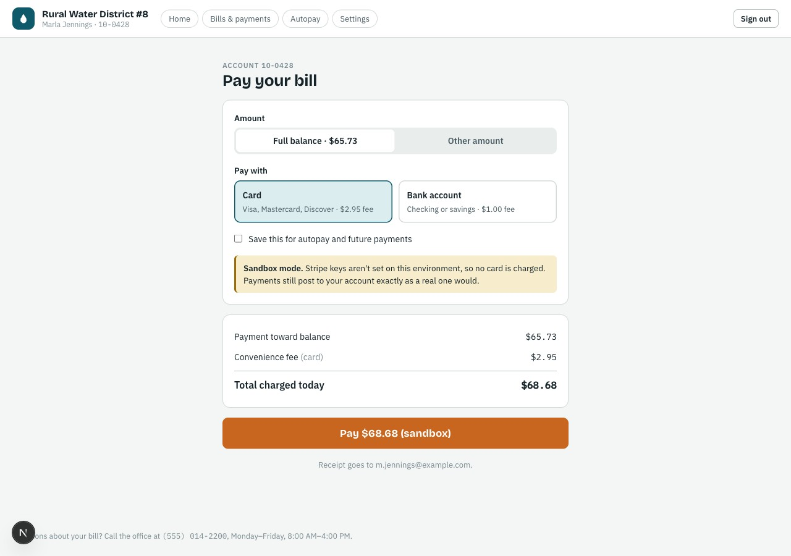
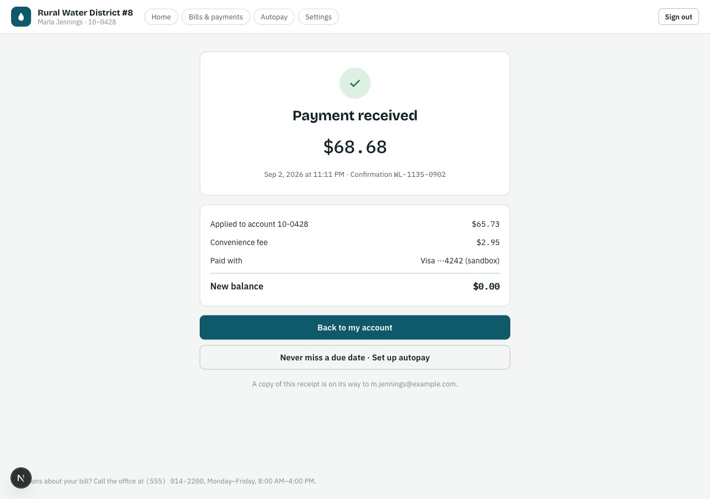
Checkout and receipt — the fee is shown before anyone pays, never after.
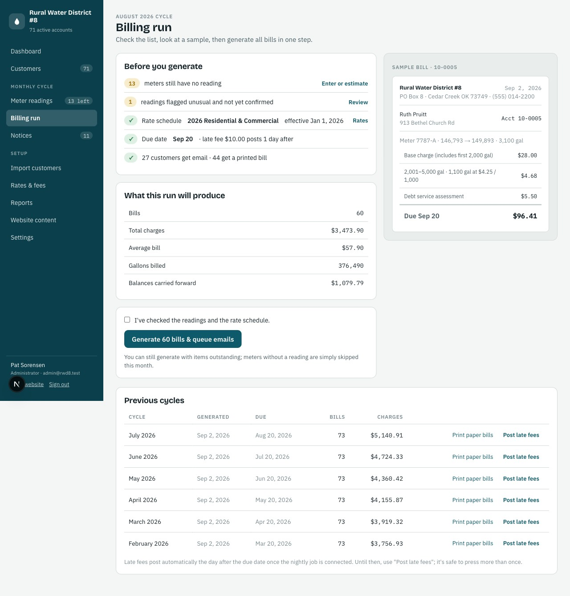
The billing run: checklist, sample, generate — 60 bills in one click on the demo district.
No app store, no laptop, no clipboard. The tech signs in and sees only their job: the route, the next unread meter, and a big number pad — with instant warnings when a reading looks wrong, and a confirmation before anything saves.
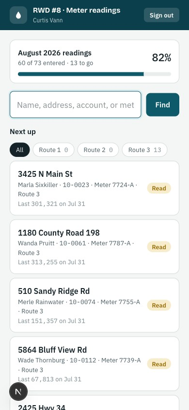
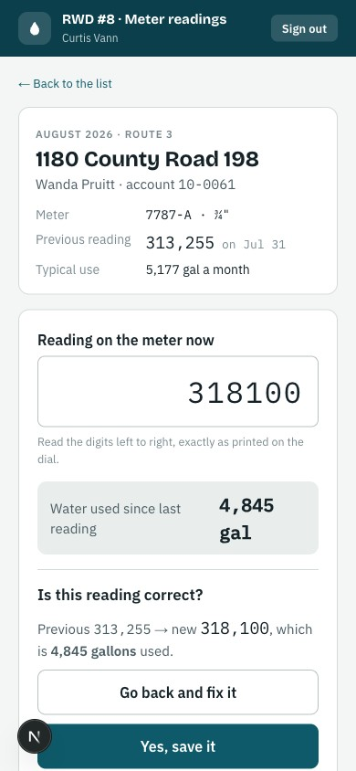
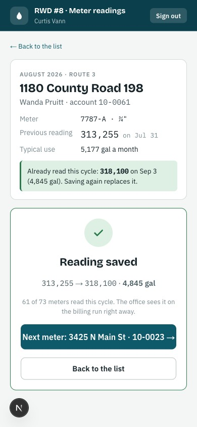
Every reading lands in the office instantly, logged under the tech's name — and flows straight into the billing run.
A chat assistant on every page of the public site answers from the district's own live data — rates, alerts, meeting dates, documents, office hours, and ways to pay. Signed-in customers can ask about their own balance and usage.
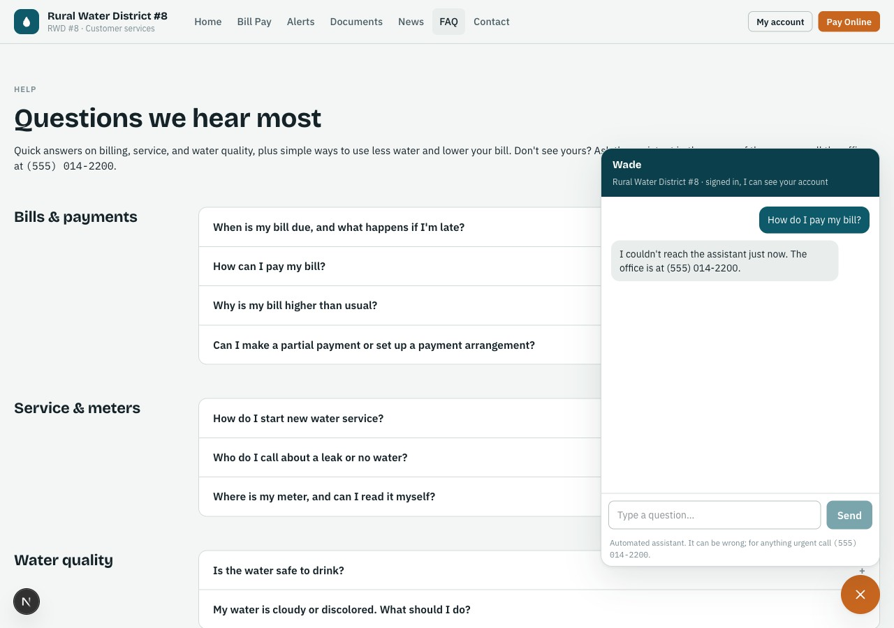
The assistant answers from the district's own content — not from the open internet.
Website, bill pay, billing system, meter reading, and the assistant — priced by connection count, sized for districts from 100 to 5,000 meters. Most districts pay more than this for a website alone. Card and bank-draft processing is pass-through at Stripe's posted rates, and the district can cover it with the convenience fee it sets.
Days, not months. The demo district was imported, seeded, and live the same day. Your timeline mostly depends on how fast we can get your customer list and rate schedule.
Yes, included. The import wizard takes a spreadsheet export from whatever you use today, matches the columns, and updates rather than duplicates if it's ever run twice.
Stripe's posted rates, passed through — roughly 2.9% + 30¢ per card payment and 0.8% capped at $5 per bank draft. The district sets its own convenience fee and can cover the cost entirely.
Nothing. SEK Waterline runs on managed cloud hosting with automatic backups. Card and bank details are entered in Stripe-hosted fields — Waterline never stores them.
Yes — every district gets its own domain and its own branding, colors, and content.
SEK Waterline is our second in-house product, from the same team that builds and runs SiteWorks work order software. Built on 16 years of doing the work, not just talking about it.